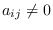
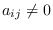
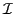
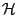
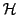
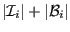

Next: Library contents
Up: General overview
Previous: General overview
Contents
Our computational model implies that the data allocation on the
parallel distributed memory machine is guided by the structure of the
physical model, and specifically by the discretization mesh of the
PDE.
Each point of the discretization mesh will have (at least) one
associated equation/variable, and therefore one index. We say that
point  depends on point if the equation for a
variable associated with contains a term in , or equivalently
if .
After the partition of the discretization mesh into sub-domains
assigned to the parallel processes,
we classify the points of a given sub-domain as following.
depends on point if the equation for a
variable associated with contains a term in , or equivalently
if .
After the partition of the discretization mesh into sub-domains
assigned to the parallel processes,
we classify the points of a given sub-domain as following.
- Internal.
- An internal point of
a given domain depends only on points of the
same domain.
If all points of a domain are assigned to one
process, then a computational step (e.g., a
matrix-vector product) of the
equations associated with the internal points requires no data
items from other domains and no communications.
- Boundary.
- A point of
a given domain is a boundary point if it depends on points
belonging to other domains.
- Halo.
- A halo point for a given domain is a point belonging to
another domain such that there is a boundary point which depends
on it. Whenever performing a computational step, such as a
matrix-vector product, the values associated with halo points are
requested from other domains. A boundary point of a given
domain is usually a halo point for some other domain2; therefore
the cardinality of the boundary points set denotes the amount of data
sent to other domains.
- Overlap.
- An overlap point is a boundary point assigned to
multiple domains. Any operation that involves an overlap point
has to be replicated for each assignment.
Overlap points do not usually exist in the basic data
distributions; however they are a feature of Domain Decomposition
Schwarz preconditioners which are the subject of related research
work [4,3].
We denote the sets of internal, boundary and halo points for a given
subdomain by ,  and .
Each subdomain is assigned to one process; each process usually
owns one subdomain, although the user may choose to assign more than
one subdomain to a process. If each process owns one
subdomain, the number of rows in the local sparse matrix is
, and the number of local columns
(i.e. those for which there exists at least one non-zero entry in the
local rows) is
 .
.
Figure 2:
Point classfication.
|
|
This classification of mesh points guides the naming scheme that we
adopted in the library internals and in the data structures. We
explicitly note that ``Halo'' points are also often called ``ghost''
points in the literature.
Next: Library contents
Up: General overview
Previous: General overview
Contents
![\includegraphics[scale=0.65]{figures/points.eps}](img13.png)